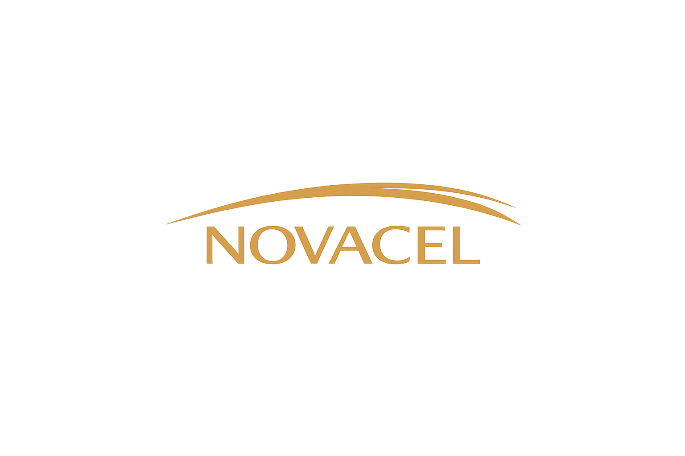
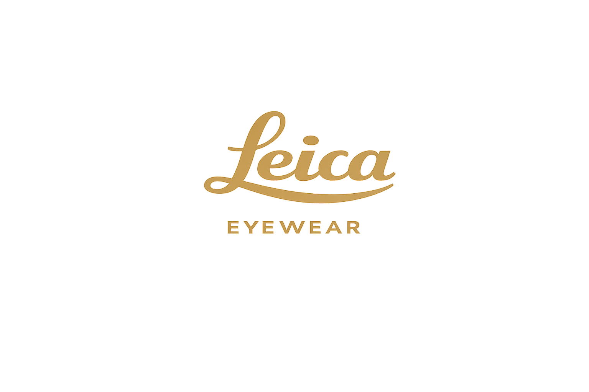
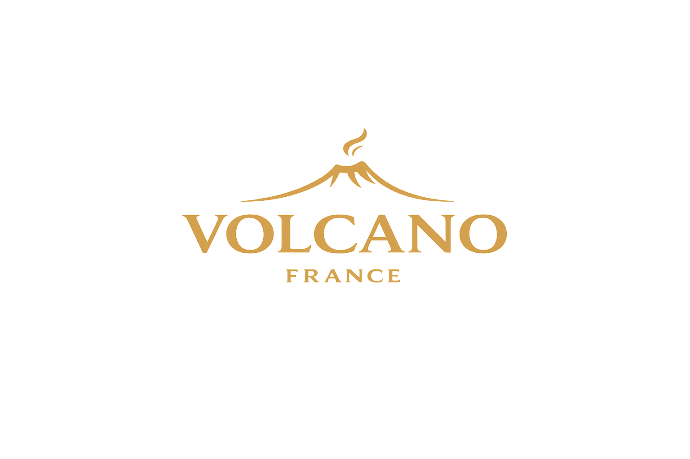

Óptica de Precisão
Representamos as marcas de lentes oftálmicas mais exigentes do mundo — tecnologia francesa e alemã ao serviço da visão perfeita.
A Nossa Abordagem
Na DMDI, a distribuição de lentes oftálmicas é mais do que um portfólio — é um compromisso com a qualidade de visão dos utilizadores finais. Cada marca que representamos foi escolhida pela sua capacidade de aliar inovação tecnológica a um rigor de fabrico que não admite meio-termos. Trabalhamos lado a lado com os óticos para garantir que a solução certa chega a cada paciente.
Os Nossos Parceiros

Fundada em França e presente no mercado óptico há décadas, a Novacel é uma das referências europeias na produção de lentes oftálmicas de alta performance. Com uma forte aposta em investigação e desenvolvimento, a marca oferece soluções para todas as ametropias — desde progressivas de última geração a lentes monofocais de índice elevado.
O rigor industrial da Novacel traduz-se em lentes com tratamentos anti-reflexo de alto desempenho, resistência ao risco e filtragem de luz azul. Uma marca que os óticos de referência reconhecem pela consistência e pela relação qualidade-preço que não tem par no mercado.

A Leica é sinónimo de perfeição óptica desde 1914 — uma herança que a Leica Eyecare transporta integralmente para o universo das lentes oftálmicas. Com tecnologia de cálculo livre de forma (free-form) e os mais avançados algoritmos de personalização, as lentes Leica Eyecare oferecem uma experiência visual que os utilizadores descrevem como transformadora.
Cada lente é concebida para o olho específico de cada pessoa, tendo em conta parâmetros como a distância ao vértice, o ângulo de envolvência e a posição de montagem. O resultado é uma precisão óptica que vai além do prescrito — a marca alemã mais respeitada do mundo aplicada à sua visão quotidiana.

Volcane France representa o melhor da tradição óptica francesa — uma abordagem artesanal ao fabrico de lentes que não abdica das mais recentes conquistas tecnológicas. Especializada em lentes de alto índice e tratamentos de superfície avançados, a Volcane distingue-se pela versatilidade do seu catálogo e pela proximidade com os óticos parceiros.
Das lentes para desporto às soluções de proteção solar com correção, a Volcane France cobre um espectro de necessidades que poucas marcas conseguem igualar. Uma presença discreta no mercado, mas com uma lealdade de clientes que fala por si.